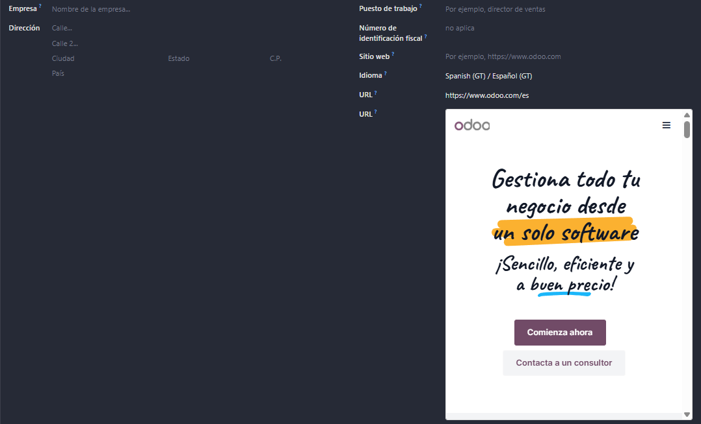

Este módulo añade un widget personalizado llamado iframe_url para Odoo 19
que permite mostrar campos de tipo texto (conteniendo URLs) como iframes embebidos
directamente en las vistas de formulario.

from odoo import models, fields
class MiModelo(models.Model):
_name = 'mi.modelo'
_description = 'Mi Modelo'
url = fields.Char(string='URL Externa')<field name="url" widget="iframe_url"/>iframe_widget en tu directorio de addons
Para modificar las dimensiones del iframe, edita el archivo:
iframe_widget/static/src/xml/iframe_url_widget.xml
Autor: Omar Flores A | Licencia: LGPL-3